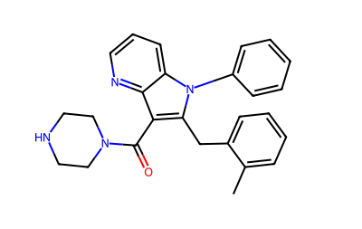
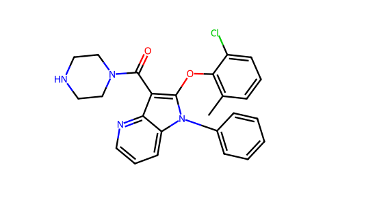
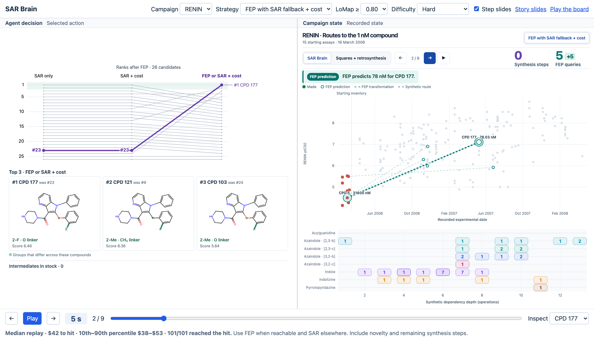

SAR Brain: A Reinforcement Learning Environment for Medicinal Chemistry Decision-Making
Replaying real campaigns with measured assays, simulated predictions, and the synthesis routes that connect compounds
A medicinal chemist deciding what to make next has at least three options. Run a calculation to learn more about a candidate. Prepare an intermediate that several candidates need. Or make one compound and send it for testing. Each choice changes the value of the others. How should an agent choose?
SAR Brain turns a real medicinal chemistry campaign into a reinforcement learning (RL) environment. We match compounds and their measured activities to synthesis routes from patents. The agent starts with a few assay results. It can use a structure–activity model, pay for a simulated free energy perturbation (FEP) prediction from an eligible measured compound, prepare a shared intermediate, or make and assay a candidate. The goal is to reach the most potent measured compound while spending as little as possible.
What links modeling and synthesis is what the agent keeps. In the RENIN replay, simulated FEP predicted an IC₅₀ of 78 nM for compound 177. The recorded assay gave 513 nM, a weaker result. Yet its synthesis left intermediate I5 in stock. The remaining route to compound 121 fell from nine steps to two, saving seven synthesis steps. Compound 121 became cheaper to make, and 177 became a measured reference for future predictions.
The replay tracks both changes after every turn. A retained intermediate lowers the price of compounds that share its route. A new assay updates the structure–activity model and makes another set of compounds eligible for FEP. We compare policies from the same starting inventory and count both synthesis operations and predictions.
Figure 1. The medicinal chemistry world
What the next experiment can reuse
Reusing an intermediate


Using a tested compound as an FEP reference


Synthesis costs before and after making CPD 177
Reconstructing a project from its records
A patent may give a full recipe for one compound and tell the reader to repeat it with a different starting material for the next. We trace each compound back through those instructions. This shows where two routes use the same intermediate and how many steps remain once that intermediate is on the shelf. To include a compound in the replay, we also need a numerical assay result. A label such as “A” may place two compounds in the strongest activity group without telling us which is more potent.
Which patents can we replay?
For ABL1 and S1P1 we used two sources. BindingDB records the activity of compounds tested in patent assays. PaRoutes supplies synthesis routes extracted from patents. We first match the patent number across the two collections. Within each patent, we check that the final product of a route has the same chemical structure as a compound in an assay record. BindingDB patent data · PaRoutes
How often did we find a numerical result?
Of the 8,872 patents in our BindingDB file, 8,554 (96.4%) had at least one positive activity entered as a single value. Of those, 4,362 also had a value qualified by < or >. The file already selects for assay data. To estimate how often patents publish only A/B/C categories, we would need to sample original patent tables independently of BindingDB.
The ABL1 patent shows why assay identity matters. Example 175 gave an IC₅₀ of 0.5 nM in the radiometric assay and 0.2 nM in a second assay. We use the radiometric result for the replay. The same table reports some compounds only as “below 3 nM.” That tells us they passed a threshold but leaves their order uncertain. ABL1 patent, biochemical data tables
RENIN has a different starting point. RetroDMTA supplies measured compounds and experimental dates. We match those compounds to preparations in the renin patent. This lets the replay show both the order of the recorded experiments and the number of operations on each synthesis route. RENIN starts with 15 measured compounds and 26 candidates from one branch. The ABL1 and S1P1 replays cover 79 and 74 compounds, respectively. Renin patent · RetroDMTA study
Assay date and synthetic depth
Synthetic depth counts the operations on the longest route from starting stock to a compound. If two fragments are made separately and then joined, both branches contribute to the total work. Only the longer branch determines the depth before the join. Compounds 102 and 270 both have depth nine, yet their experimental dates are 349 days apart.
Estimating potency
The renin assay reports IC₅₀, the concentration that cuts enzyme activity in half. A lower IC₅₀ means a more potent inhibitor. The plots use pIC₅₀, a logarithmic scale on which 10 nM is 8 and 1 nM is 9.
Our structure–activity relationship (SAR) model estimates a candidate’s potency by averaging the activities of similar compounds that the player has already tested. A new assay can change the estimate for several candidates.
Free energy perturbation (FEP) is a physics-based simulation method that estimates how a change in molecular structure affects binding to a target. In this replay, we simulate only the prediction error. We start with the candidate’s known experimental potency, hidden from the player, and add a random error on the log scale. For this kind of FEP calculation, the reference and candidate generally need to be structurally similar enough to match corresponding atoms and simulate the change from one molecule to the other. The replay uses the LoMap score as a practical test. A player can request a prediction when the pair’s score reaches the chosen cutoff. The LoMap score and difficulty setting determine the size of the assumed error. Lead Optimization Mapper
A related proposal asks whether running FEP at the time would have changed which compound chemists made next. It proposes testing this first on Roche PDE10A and then on selected Sanofi series. Read the FEP proposal on ResearchHub
Potency estimates
Weight of each measured compound
Predicted and measured ABL1 activity
Each dot is a prediction from the measured reference, Example 190. On the diagonal, predicted and measured activities agree.
How the simulator adds error
Here s is the LoMap score and σ₀.₆ is the assumed error standard deviation at s = 0.60. Each pair keeps the same random draw z from a standard normal distribution as you change the settings. At 298 K, 1.36 kcal/mol corresponds to one pIC₅₀ unit.The rules of the replay
In reinforcement learning terms, the synthesis routes, assays and game rules form the environment. The player sees the structures, the material in stock, earlier results and the amount spent. The remaining assay results stay hidden, as do the errors in individual predictions. This makes the environment partially observable.
The player can stock an intermediate, make and assay a compound, or request an FEP prediction. Each synthesis step costs one game dollar. Testing the finished compound is included. We assume each preparation leaves enough intermediate for later compounds. An FEP prediction also costs one dollar.
A policy uses a candidate score to choose which compound to make next. A run succeeds when the player makes and tests the most potent compound in the set. At the default prices, total reward = −(synthesis steps paid + FEP queries bought). All four policies pay for the steps they use, including those that rank candidates without a cost penalty.
Compound selection rules
- Potency.
- Novelty.
- Tmax is the highest Tanimoto fingerprint similarity between candidate c and any measured compound. A less similar candidate gets a larger bonus.
- Cost.
- C counts the synthesis steps still needed from current stock. A one-step synthesis has zero penalty because ln(1) = 0.
CPD 177, before synthesis.
Opening RENIN estimates · FEP 78 nM · 9 remaining stepsHow the policy selects a batch
Rank all unmade compounds by S(c), highest first. Select the top two for RENIN or the top four for ABL1 and S1P1. After each synthesis, update the remaining step counts and choose the highest-scoring compound left in the batch. Potency and novelty stay fixed until the next batch.
Full round diagramThe RENIN results
The agent bought FEP predictions for five compounds. The estimate of 78 nM moved compound 177 from 23rd to first. The figure follows it from that decision through the assay and shows where I5 enters the route. Patent preparation of I5
Making compound 177
Later in the same run, compound 239 measured 9 nM. Compound 223 was already more potent at 6 nM. Compound 239 was useful because it gave the player a reference for predicting compound 270. Making 270 took two more steps. Its assay confirmed 1 nM.
Cost to reach the 1 nM RENIN compound
The strategy using FEP reached compound 270 in 17 synthesis steps. The strategy using SAR and synthesis cost took 21. That saved 19% of the synthesis work. Its 25 predictions brought the bill to $42, compared with $21 for SAR and synthesis cost.
We repeated the FEP run 101 times from the same starting stock, varying the prediction errors. The replay shows a run with the median total cost. Its closing chart shows the spread across runs.
Reading the replay
Start with RENIN and use the right arrow or Play. Before each move, a slide explains the decision. Watch the left panel to see the agent act and the candidates change rank. On the right, follow the same move through the assay plot and synthesis inventory.
One move in the RENIN replay

1 · LoMap cutoff
Change LoMap ≥ in the top bar to replay the same strategy with a different set of allowed predictions. At 0.80, a pair scoring 0.79 is excluded and a pair scoring 0.81 qualifies, provided the agent has made and tested the reference. Raising the cutoff can leave more candidates to the SAR model.
2 · Difficulty and FEP error
Difficulty controls how much random error the game adds to a compound’s hidden log potency. At a pair score of 0.60 the error standard deviation is 0.5, 1 or 2 kcal/mol on Easy, Medium or Hard. At 0.80 it is 0.3, 0.6 or 1.2. At 1.00 it is 0.1, 0.2 or 0.4. The scale changes linearly between scores. Ideal uses zero error.
For the Hard run pictured here, a pair scoring 0.80 has a standard deviation of 1.2 kcal/mol. A draw can make a candidate look stronger or weaker. Each purchased prediction stays fixed for that run. This is an assumption for testing strategies. Try the error settings.
3 · Why the agent picks 177
Follow the purple line across the left panel. Compound 177 ranks 23rd by SAR and 23rd after accounting for synthesis cost. With its FEP prediction, it ranks first. The structures below show the three leading candidates.
4 · What the agent knows and spends
Open circles show FEP predictions. Filled colored circles show compounds the agent has made and tested. The squares below represent groups of intermediates at the same synthetic depth. Select Squares + retrosynthesis to see which routes get cheaper as stock builds up. The counters above the plot track synthesis steps and FEP queries separately.
To compare decisions, change Strategy in the top bar. The forward strategies start with the same inventory and can use only the results they have acquired. The hindsight control gets the winner’s identity at the start. Its FEP route takes the fewest eligible transformations and, among tied paths, the fewest additional synthesis steps.
The closing chart compares what the four forward strategies spent to reach the winner. Switch between synthesis steps and total spend to see what the FEP queries cost. For noisy FEP, the dot marks the median and the whiskers span the middle half of 101 runs.
Play RENIN · 1 nM inhibitor · Play ABL1 · Example 175 · Play S1P1 · 2 nM hit